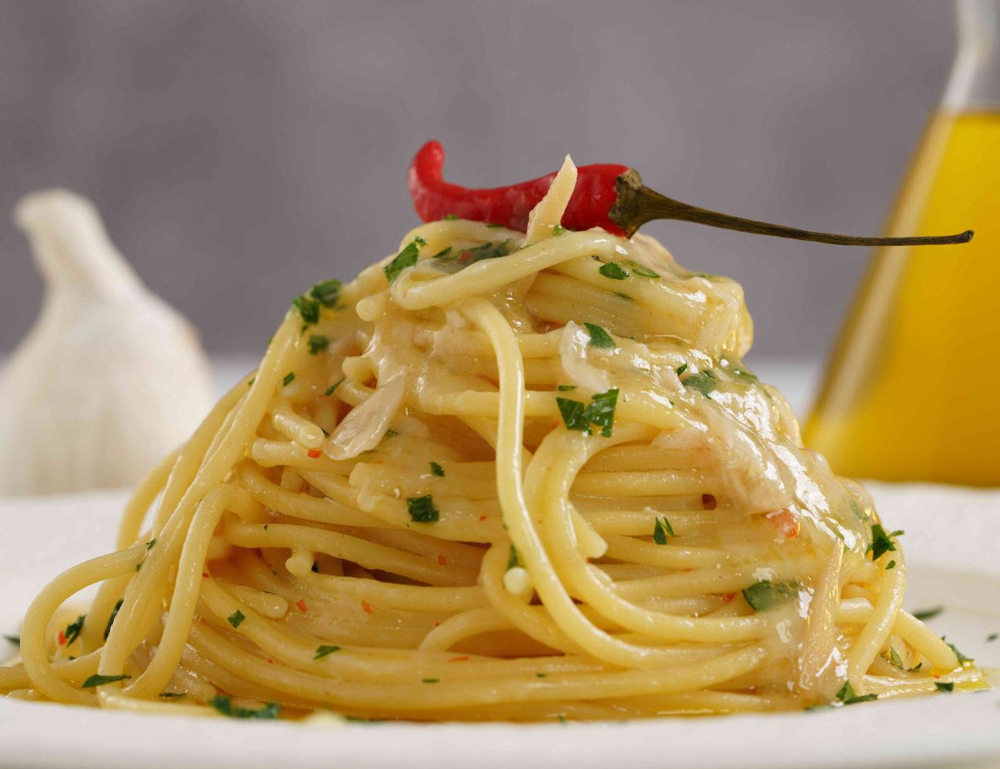

This timeless Italian classic is another staple of cucina povera - the traditional Italian peasant-style cooking that makes as much as possible with the fewest ingredients. The dish is made simply by tossing spaghetti together with garlic (and crushed chili for aglio, olio, and peperoncino) sautéed in olive oil.
Meal prep time : 25 minutes
Servings : 4